设计模型
当前项目的开发，都是数据驱动的，即分析出项目中所需要存储的数据，然后设计数据表及表结构，接下来再使用设计好的页面对表完成数据的crud django中内嵌了ORM框架，不需要直接面向数据库编程，而是定义模型类，通过模型类和对象完成数据表的crud
ORM框架
O是object，也就类对象的意思，R是relation，翻译成中文是关系，也就是关系数据库中数据表的意思，M是mapping，是映射的意思。在ORM框架中，它帮我们把类和数据表进行了一个映射，可以让我们通过类和类对象就能操作它所对应的表格中的数据。ORM框架还有一个功能，它可以根据我们设计的类自动帮我们生成数据库中的表，省去了我们自己建表的过程。
django中内嵌了ORM框架，不需要直接面向数据库编程，而是定义模型类，通过模型类和对象完成数据表的增删改查操作。
使用django进行数据库开发的步骤如下：
- 1.在models.py中定义模型类
- 2.迁移
- 3.通过类和对象完成数据增删改查操作
下面我们以保存图书信息为例来给大家介绍Django中进行数据库开发的整个流程。
1.定义模型类
模型类定义在models.py文件中，继承自models.Model类。
说明：不需要定义主键列，在生成时会自动添加，并且值为自动增长。
设计图书类
图书类：
- 类名：BookInfo
- 图书名称：btitle
- 图书发布日期：bpub_date
模型类的设计
根据设计，在models.py中定义模型类如下：
from django.db import models
class BookInfo(models.Model):
btitle = models.CharField(max_length=20)
bpub_date = models.DateField()
2.迁移
迁移前目录结构如下图：
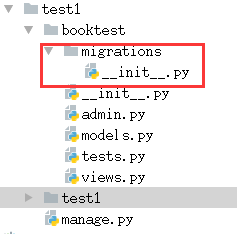
迁移由两步完成:
- 1.生成迁移文件：根据模型类生成创建表的迁移文件。
- 2.执行迁移：根据第一步生成的迁移文件在数据库中创建表。
生成迁移文件命令如下：
python manage.py makemigrations

执行生成迁移文件命令后，会在应用booktest目录下的migrations目录中生成迁移文件。
生成迁移文件后的目录结构：
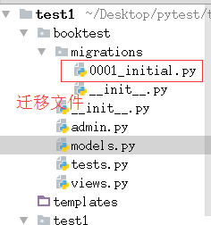
打开上图中的迁移文件，内容如下： 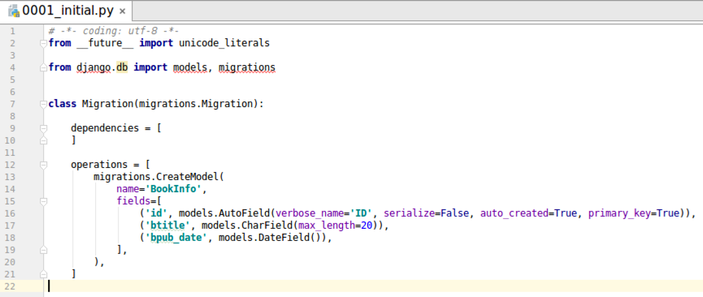
Django框架根据我们设计的模型类生成了迁移文件，在迁移文件中我们可以看到fields列表中每一个元素跟BookInfo类属性名以及属性的类型是一致的。同时我们发现多了一个id项，这一项是Django框架帮我们自动生成的，在创建表的时候id就会作为对应表的主键列，并且主键列自动增长。
执行迁移命令如下：
python manage.py migrate
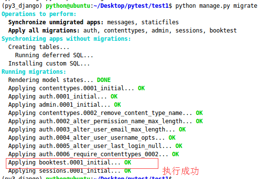
当执行迁移命令后，Django框架会读取迁移文件自动帮我们在数据库中生成对应的表格。
Django默认采用sqlite3数据库，项目目录中的db.sqlite3就是Django框架帮我们自动生成的数据库文件。 sqlite3是一个很小的数据库，通常用在手机开发中，它跟mysql一样，我们也可以通过sql语句来操作它。
- 可以在pycharm中查看数据库，按下图步骤打开
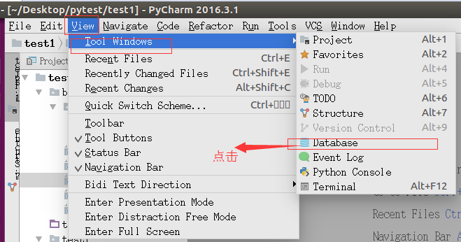
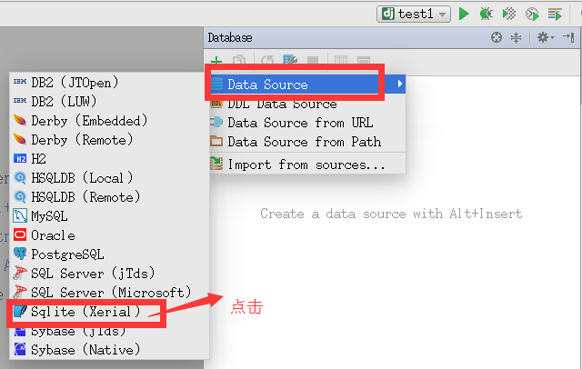
- 第一次需要安装驱动
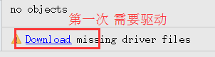
- 下图选中数据库的位置
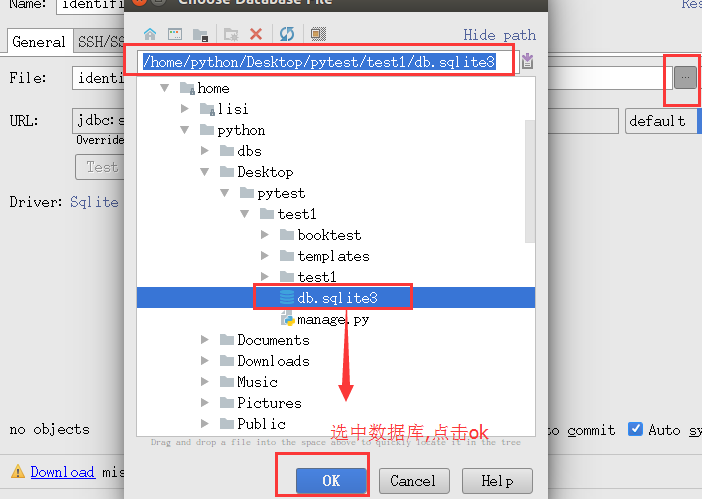
- 下图可见看到创建好的表booktest_bookinfo
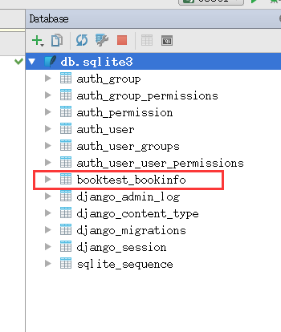
默认生成的表名称
细心的同学会发现我们上面生成的表的名字叫做booktest_bookinfo，booktest是应用的名字，bookinfo是模型类的名字。
数据表的默认名称为：
<app_name>_<model_name>
例：
booktest_bookinfo
设计英雄类
英雄类：
- 类名：HeroInfo
- 英雄姓名：hname
- 英雄性别：hgender
- 英雄简介：hcomment
- 英雄所属图书：hbook
- 图书-英雄的关系为一对多
打开booktest/models.py，定义英雄类代码如下：
class HeroInfo(models.Model):
hname = models.CharField(max_length=20)
hgender = models.BooleanField()
hcomment = models.CharField(max_length=100)
hbook = models.ForeignKey('BookInfo')
这里要说明的是，BookInfo类和HeroInfo类之间具有一对多的关系，这个一对多的关系应该定义在多的那个类，也就是HeroInfo类中。
hbook = models.ForeignKey('BookInfo')这句代码就让BookInfo类和HeroInfo类之间建立了一对多的关系。
在我们之后迁移生成表的时候，Django框架就会自动帮我们在图书表和英雄表之间建立一个外键关系。
生成迁移文件：
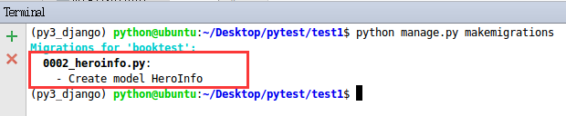
执行迁移：
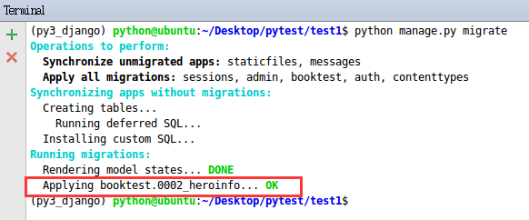
最后我们可以看到数据库中生成的英雄表如下图：
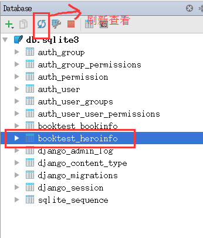
注意上图中booktest_heroinfo表中有一列hbook_id，对应着图书表中的主键id。